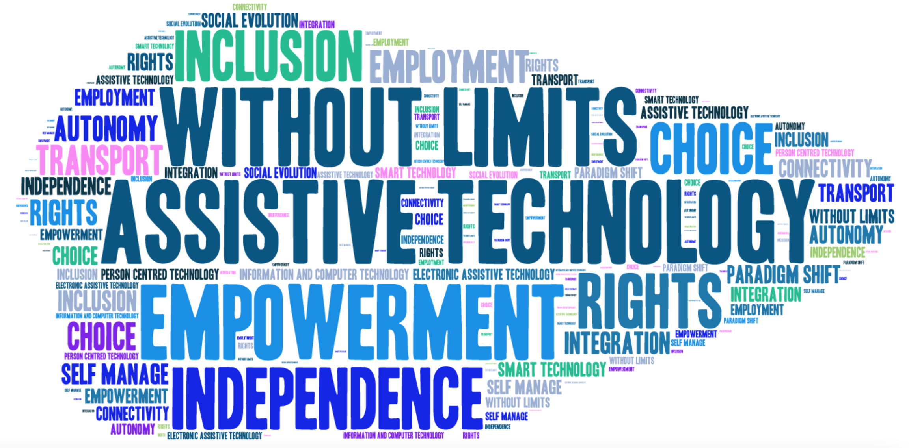

What is Assistive Technology?
Assistive technology is any application, equipment, software, or product that is created to help people with disabilities perform functions that would be difficult or impossible to do independently.
According to the Assistive Technology Industry Association, assistive technology exists in a variety of forms:
- Low tech: communication boards made of cardboard or fuzzy felt
- High tech: special purpose computers
- Hardware: prosthetics, mounting systems, and positioning devices
- Computer Hardware: special switches, keyboards, and pointing devices
- Computer Software: screen readers and communication programs
- Learning materials and curriculum aids
- And much more: electronic devices, wheelchairs, walkers, power lifts, eye-gaze and head trackers, etc.
With the variety of available assistive technologies, a diverse group of people with disabilities are benefitted. These include (but are not limited to) visual impairment & blindness, Autism spectrum disorders, mobility impairment, deafness, and more.
While the opportunities to help are endless, this website focuses specifically on how assistive technology benefits those with speech and language disorders. Communication is a key component of our world; assistive technology has successfully changed the future for people with speech and language disorders due to the development of tools that allow for independent communication.